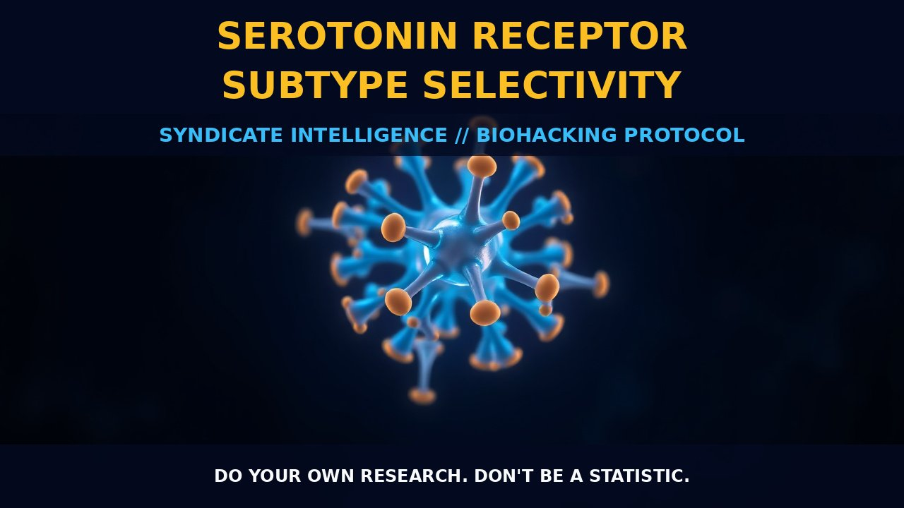

Serotonin Receptor Subtype Selectivity

THE MECHANICS
The intricate mechanisms underlying serotonin receptor subtype selectivity form a complex matrix through which neurotransmitter regulation occurs. Serotonin (5-hydroxytryptamine or 5-HT), pivotal in mood modulation, cognition, and appetite control, impacts these functions primarily by activating a family of G protein-coupled receptors (GPCRs). The nuanced interplay between serotonin and its fourteen distinct GPCRs ensures meticulous regulation across various physiological processes, from mood stabilization to cognitive function. Yet, the propensity for serotonin excess leading to life-threatening conditions like serotonin syndrome—marked by heightened physiological activity and restlessness—underscores the delicate balance within this system.
Neurotransmitter imbalance, often linked to psychological disorders, poses a significant challenge in identification and treatment. While assessments such as personality type tests or urinary organic acid measurements can offer initial insights into general neurotransmitter status, their reliability is diminished by the complexities of intestinal serotonin release and differentiation challenges. Thus, selective drug development has emerged as a critical front, exemplified by Lorcaserin (targeting 5-HT2C receptors) and Pimavanserin (specific for 5-HT2A receptors), which offer therapeutic potential with reduced side effects by selectively modulating specific receptors within the complex serotonin pathway.
THE BIOLOGICAL LEVERAGE
Pharmacological interventions have taken a significant leap forward, leveraging precise drug development to target specific serotonin receptors. This targeted approach allows for nuanced manipulation of serotonin's influence on mood, cognitive function, and other physiological processes with reduced off-target effects. For instance, Lorcaserin selectively acts upon 5-HT2C receptors, presenting a promising avenue for addressing eating disorders more effectively while mitigating adverse side effects.
In addition to pharmacological solutions, nutritional supplements like Tryptophan or 5-HTP offer natural avenues for influencing serotonin levels by facilitating its synthesis in the brain. These supplements provide alternatives for managing mood and cognitive functions with potentially fewer complications compared to synthetic interventions. The strategic use of these supplements can play a critical role in optimizing neurological function without resorting to more invasive or risky treatments.
THE TACTICAL IMPLEMENTATION
While specific dosages may vary depending on the therapeutic goal and drug formulation, a general guideline is essential for practitioners. For Tryptophan, daily doses ranging from 500mg to 1g are recommended, tailored to the condition being addressed. 5-HTP typically requires a more cautious approach with doses around 100mg to 300mg per day, as higher intakes can lead to side effects.
Lorcaserin, FDA-approved for weight loss, is initiated at a dose of 10mg twice daily and titrated up to 20mg twice daily based on efficacy and tolerability. The strategic implementation of these dosing protocols not only ensures the targeted modulation of serotonin receptors but also minimizes adverse reactions, enhancing both safety and efficacy.
In conclusion, the understanding and application of serotonin receptor subtype selectivity are crucial for navigating the intricate landscape of neurotransmitter regulation. By leveraging selective pharmacological interventions and nutritional supplements, we can harness the full potential of serotonin in optimizing neurological function and addressing a range of disorders effectively.
Do your own research. Don't be a statistic.
Prostar Life Hack
Always verify protocol biological leverage with baseline biometric tracking. Data is sovereignty.
[ AUTHOR: LEAD TECHNICAL RESEARCHER ]